Contents
Displayed text
Unlike LaTeX's verbatim environment, ConTeXt's typing environments have quite a range of built-in options for formatting the verbatim text, see below.
Inline text
To typeset code inside the paragraph, you have the command \type. It can be configured with \setuptype[type][...].
To have colored code, you need to use \definetype[NAME][option=TEX] and use it with the name you chose. Other values are: mp lua xml parsed-xml nested tex context.
An example that shows both features:
-
\definetype[inlineTEX][option=TEX] This is the way to type code: \type{the \ConTeXt\ command}. And this is the way to have colored code: \inlineTEX{the \ConTeXt\ command},
- 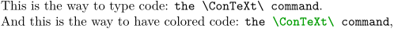
You can also refer to a TeX command with: \tex{a tex command}
-
\tex{a tex command}
Making a tight vertical fit
By default, typing environments include some blank space before the first line and after the last line of the verbatim text. This is because the before and after commands are set to \blank by default. For example:
-
\framed[offset=0mm,strut=no,align=right]{ \starttyping Foo \stoptyping }
- 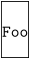
Here, we've added a \framed so you can see the extra spacing, but with offset=0mm and strut=no to prevent framed from introducing spacing, and align=right to prevent framed from eating all newlines (not sure why that works like this).
To prevent this extra vertical space, we must unset the before and after options:
-
\setuptyping[before=,after=] \framed[offset=0mm,strut=no,align=right]{ \starttyping Foo \stoptyping }
- 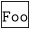
Embedded formatting commands
The option=commands setting allows the usage of ConTeXt commands inside verbatim text, as in this example:
\definetyping[C][option=commands] \startC #include <stdio.h> int main(){ return 0; /BTEX{\em unreachedCode;}/ETEX } \stopC
- 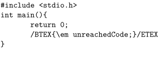
In mkiv option-commands is gone and escape no longer is an escape character but a condition (range or start), as in this example:
\setuptyping[TEX][escape=yes] \startTEX /BTEX\em sometex/ETEX /BTEX\em sometex/ETEX \after \before /BTEX\em sometex/ETEX \before /BTEX\em sometex/ETEX \after \before /BTEX\em sometex/ETEX \inbetween /BTEX\em sometex/ETEX \after \before \after \stopTEX \setuptyping[TEX][escape={[[,]]}] \startTEX [[\em sometex]] [[\em sometex]] \after \before [[\em sometex]] \before [[\em sometex]] \after \before [[\em sometex]] \inbetween [[\em sometex]] \after \before \after \stopTEX \setuptyping[TEX][escape=//] \startTEX //\em sometex \before //\em sometex \stopTEX
Verbatim with line breaks
Pretty printing
The context distribution includes a number of formatters (or pretty printers), that can apply some nice formatting to your verbatim text. Each formatter knows how to handle a specific file format or programming language and applies syntax highlighting or other fancy displaying.
ConTeXt includes a number of predefined formatters, but it is also possible to define your own. Pretty printing has been completely redesigned in MkIV, so there are a few differences between MkII and MkIV. In particular, MkII commonly refers to "formatters", while MkIV often uses "pretty printers".
Included Formatters
There are already some formatters for several programming languages in the ConTeXt distribution. The following list is for MkII and MkIV.
| Language | Code for MkII | Code for MkIV |
|---|---|---|
| C | C | C |
| Eiffel | EIF | |
| JavaScript | JS | |
| Java | JV | |
| Lua | LUA | |
| MetaPost & MetaFont | MP | MP |
| Pascal & Modula | PAS | |
| Perl 5 | PL | |
| SQL | SQL | |
| TeX | TEX | TEX |
| XML | XML | XML |
Your own formatter
You should start from the definition that is closest to the language you want to define (especially wrt comment and string syntax) and can probably have a go at making a version of this. Some questions occur:
How should I name my file?
- MkII
- verb-xxxx.tex , where xxxx is the lowercase name of the formatter.
- MkIV
- pret-xxxx.lua , where xxxx is the lowercase name of the pretty printer.
Where should i put my file?
- Possibly the best place is: In the context distribution, but that depends a bit on what language it is, precisely (you can email me the completed file, in that case).
- Second best place: http://modules.contextgarden.net , so it can be included in cont-ext.zip (third-party addons that are distributed by Pragma-Ade alongside the normal distribution).
- Third best: The directory <$HOME/texmf/tex/context/base> (the place where your TeX installation finds local files).
- Final option: Same directory as the file to be processed
Do I have to do anything else to get ConTeXt to recognise and use it?
You refer to a pretty printer using its name (e.g., the xxxx in verb-xxxx.tex or pret-xxxx.lua), which should be in lowercase. Before you can use a pretty printer, you should let ConTeXt know about it (this has already been done for the included formatters).
\installprettytype [PHP] [PHP]
This maps the command \starttyping[option=PHP] to the
php pretty printer.
The first argument is the option as passed to \starttyping, the second argument is an uppercase version of the pretty printer name (e.g. xxxx) (thus allowing ConTeXt to find the file).
And you probably also want:
\definetyping[PHP] [option=PHP]
Because that allows \startPHP ... \stopPHP as a shortcut
to \starttyping[option=PHP] ... \stoptyping.
How to write the pretty printer?
For MkII, there seems to be no real documentation here. You should take a good look at the existing formatters and base your work off those. However, if you really need custom pretty printing, you might be better of to look at MkIV instead, since that allows you to write a pretty printer in lua, which is a lot less painful than writing them in plain TeX.
For MkIV, you should simply write a lua script that processes each line of input and produces tex output. The details about this are discussed at Custom pretty printer.
Improved pretty printing
Default ConTeXt comment handling can be shown in the following sample:
-
\starttext \startbuffer[texcode] This is text. % and this is a comment \stopbuffer \startbuffer[xmlcode]
This is text.
\stopbuffer \startbuffer[luacode] if code=="code" then --this is a comment --[[ this is a multiline comment --]] ---[[ but this isn’t a multiline comment --]] \stopbuffer \typebuffer[texcode][option=TEX] \typebuffer[xmlcode][option=XML] \typebuffer[luacode][option=LUA] \stoptext - 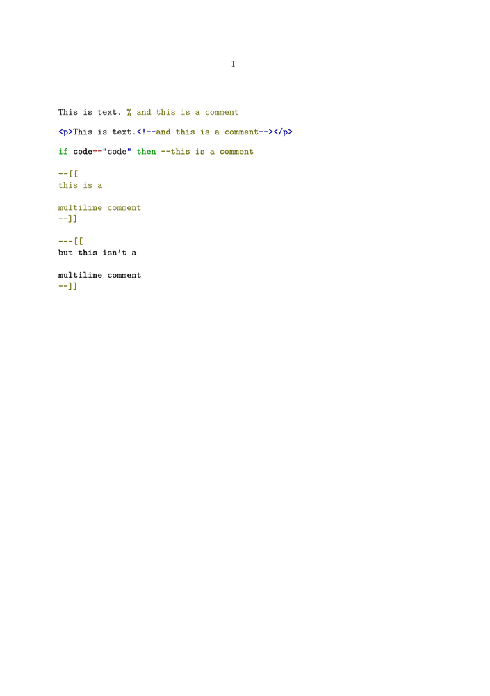
If you want to improve Lua multiline comments and to color the whole comments (not only the comment marker), write \usemodule[scite] before \starttext. (I cannot show it here, since ConTeXt at the wiki seems to have a problem with that.)
Tabbing
The tab character normally corresponds to one character, as can be seen above. That value can be adjusted, using the following code (available in the 2005.06.01 version and later):
\definetyping[C][tab=3] % for older ConTeXt versions: \chardef\spacespertab=3 \startC int func(int a){ if(a > 4) return 0; else return 10; } \stopC
- 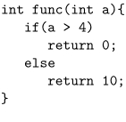
Syntax highlighting in color
\setupcolors[state=start] \setuptyping[option=color] \starttext \startXML ... your XML code ... \stopXML \stoptext
-
- 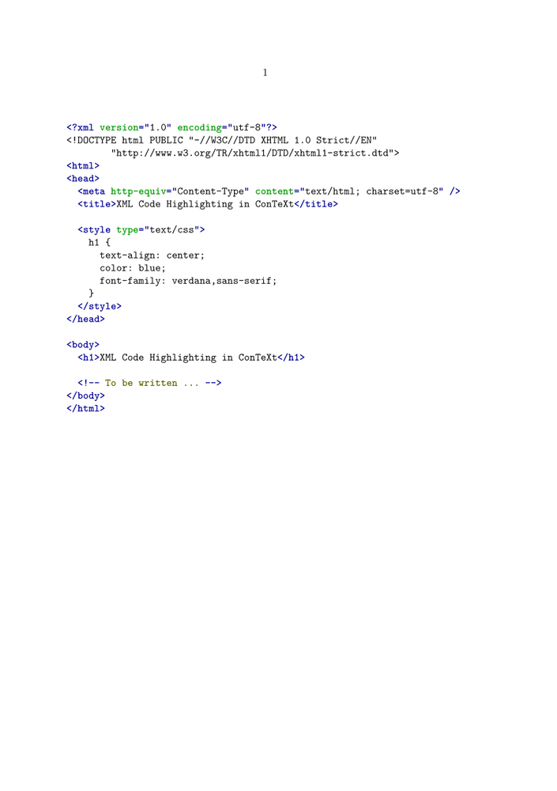
Defining your own set of colors
Sometimes you may be not quite satisfied with the default colors used in the built-in syntax highlighting. Taco posted this solution in the discussion on the mailing list:
\setupcolors[state=start] \setuptyping[option=color] % define the colors to fit your document style \definecolor[MYcolorone] [r=.8,g=.5,b=.5] \definecolor[MYcolortwo] [r=.8,g=.5,b=.2] \definecolor[MYcolorthree][r=.8,g=.5,b=.8] \definecolor[MYcolorfour] [r=.8,g=.2,b=.5] % define a palete using these four colors \definepalet[MYcolors] [prettyone=MYcolorone, prettytwo=MYcolortwo, prettythree=MYcolorthree, prettyfour=MYcolorfour] % XML code will be typeset with the palette you just defined \definepalet[XMLcolorpretty][MYcolors] % the name is magic ! - mkii only \starttext \startXML ... your XML code ... \stopXML \stoptext
This results in:

Syntax highlighting source code or configuration files
see Verbatim with LuaTeX with Python, Apache httpd.conf and zc.buildout config files examples.
Colored background
\setupcolors[state=start] \definetextbackground[verbatim] [background=color, backgroundcolor=yellow, backgroundoffset=0cm, offset=0.5cm, frame=on, framecolor=black, location=paragraph, color=black] % Setup verbatim \setuptyping[typing][margin=1cm,bodyfont=8.0pt, before={\starttextbackground[verbatim]}, after={\stoptextbackground}] \starttext \starttyping This is the first line. This is the second line. \stoptyping \stoptext
Line numbering
In technical documents it can be required to display some code listings with the line numbers. You can do this with ConTeXt, and even more. All the features shown here are also available when displaying external files with \typefile.
Preliminary setting
Let's define our own typing style, named "code". The typing is put in a framedtext, to demonstrate the wrapping feature in a next section.
\defineframedtext [framedcode] [strut=yes, offset=2mm, width=7cm, align=right] \definetyping[code][numbering=line, bodyfont=small, before={\startframedcode}, after={\stopframedcode}]
Default line numbering
With the defined typing, every line is numbered, and the number goes in the margin. The option to have the line numbers displayed is numbering=line.
\startcode This is the first line This is a rather long line that is wrapped, so look how the line numbering is done Another line Last line after an empty line \stopcode
It is rendered as:
- 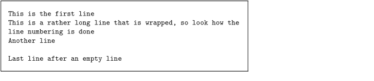
Line numbers in the text
To have the line numbers in the text, change the linenumbering setup like this (location=text for mkiv resp.):
\setuplinenumbering[location=text] \startcode This is the first line This is a rather long line that is wrapped, so look how the line numbering is done Another line Last line after an empty line \stopcode
- 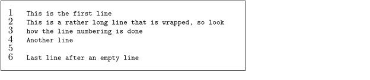
Continuing the numbering
Another handy feature is the ability to continue the numbering from one portion of code to another. Use the option continue for this.
\startcode This is the first line This is a rather long line that is wrapped, so look how the line numbering is done Another line Last line after an empty line \stopcode Some normal text to explain the first piece of code, and introduce the following lines. \startcode[continue] This is the first continuing line This is a rather long line that is wrapped, so look how the line numbering is done Another line Last line \stopcode
- 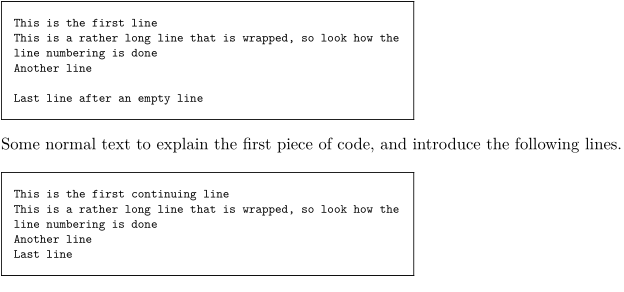
Arbitrary starting line number
You can also decide what the starting line number is. Use the option start=number for this.
\startcode[start=200] This is the first line This is a rather long line that is wrapped, so look how the line numbering is done Another line Last line \stopcode
- 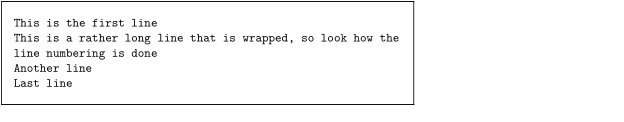
Line number steps
You want to print a number every two lines? Ok, just use the option step=number for this.
\startcode[start=200,step=2] This is the first line This is a rather long line that is wrapped, so look how the line numbering is done Another line Last line \stopcode

{kind=link}
Referencing line numbers
The following example from the mailing list [1] shows how to reference line numbers from a typing in the surrounding text (MkIV).
\setuptyping[numbering=line,escape=yes] \starttext See \inline[line:single] and also \inline[line:range]. See \inline{typeline}[line:single] and also \inline{typelines}[line:range]. See line~\inlinerange[line:single] and also lines~\inlinerange[line:range]. \starttyping line 1 line 2/BTEX\startline[line:range]/ETEX line 3/BTEX\someline[line:single]/ETEX line 4 line 5/BTEX\stopline[line:range]/ETEX line 6 \stoptyping \stoptext
A different approach to formatting and code colorization
Supposing that:
a) you are much more fluent in another programming language than TeX
b) you have a large project involving many code snippets to be inserted and colorized
you can go for another, less elegant, way to format your verbatim text, which can include all the discussed ConTeXt benefits.
Writing a parser/formatter
It is fairly simple to write a little parser which takes as its input your source file and gives in output a .tex file containing the code plus the opportune commands for colorization. You can then include the resulting .tex file in the global ConTeXt document file. As an example, this is a Python script for the SuperCollider language, which has a strict Smalltalk-like syntax.
Fed with the following source code contained in e.g. example.sc file:
- 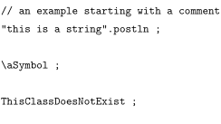
the script outputs this tex code, which is written into a file contained in the same folder of the source file (named example.tex):
\startSC /BTEX\color[SCred]{//// an example starting with a comment}/ETEX /BTEX\color[SCgrey]{"this is a string"}/ETEX .postln ; /BTEX\color[SCgreen]{\letterbackslash aSymbol}/ETEX ; /BTEX\color[SCblue]{ThisClassDoesNotExists}/ETEX ; \stopSC
Basically, the idea is to envelope each item to be colorized inside a /BTEX /ETEX block. Note that inside the block the text is no more verbatim, so you have to define some string replacements for special characters (e.g. _, %, $, \, etc). As an example, the problem of the backslash (\) is solved here by replacing it with \letterbackslash.
You can then insert example.tex in your ConTeXt file with
\input example
The example.tex file uses some definitions (explained in the previous sections) which have to be put in the ConTeXt file (use escape=yes instead of option=commands for mkiv).
\defineframedtext [framedSC] [framecolor=cirmaBlue, strut=yes, offset=2mm, width=local, align=right] \definetyping[SC][option=commands, tab=2,numbering=line, before={\startframedSC}, after={\stopframedSC}]
Also, example.tex requires color definitions, which are created following SuperCollider colorization interpreter scheme and have to be inserted in the ConTeXt file too:
%% SC colors %% \definecolor [SCwhite] [r=1.0, g=1.0, b=1.0] \definecolor [SCblack] [r=0.0, g=0.0, b=0.0] \definecolor [SCblue] [r=0.0, g=0.0, b=0.75] \definecolor [SCred] [r=0.75, g=0.0, b=0.0] \definecolor [SCgrey] [r=0.376, g=0.376, b=0.376] \definecolor [SCgreen] [r=0.0, g=0.45, b=0.0] \definecolor[cirmaBlue] [r=.0,g=.2,b=.6] % for frame
The previous definitions will be used for all the code files inserted with \input. After compiling, this is the result of the discussed example:
- 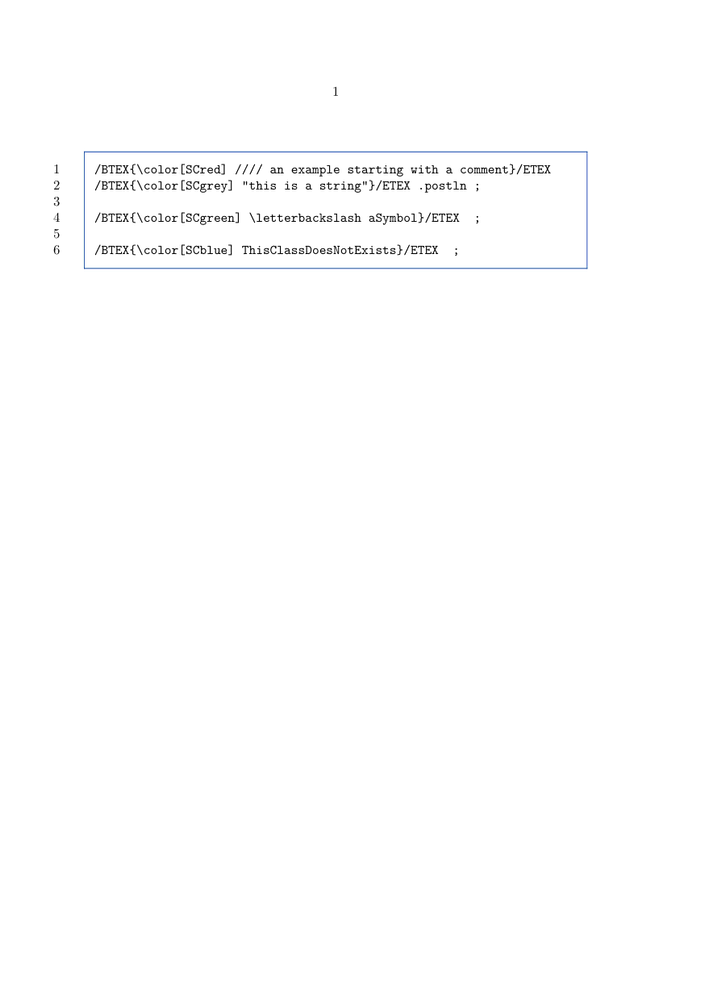
Embedding the source code
If your document is inteded to provide code examples to be tested by the readers, the presence of format signs (e.g. line numbers) can create some troubles while copying and pasting the code text from your document to the language environment. More generally, the copy and paste approach, being slow and possibly related to encodings, is not satisfying at all. You can include source files in the pdf with a couple of ConTeXt commands:
\useattachment[ex][example.sc] \attachment[ex]
So that you can have this structure for each code snippet:
\input example \useattachment[ex][example.sc] \attachment[ex]
The commands embed example.sc in the pdf, so that it is accessible by double-clicking on a generated icon. In this case the icon is placed after the colorized code frame.
If you use Acrobat Reader (Preview.app in MacOSX does not provide support for the behaviour) example.sc will be open in the related application (e.g. SuperCollider.app in the discussed case).
The discussed approach has been implemented here.
(-a- --> User:Andrea)